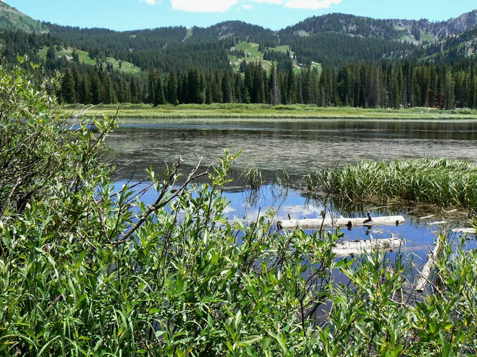

RESEARCH PENDING · Brighton, Big Cottonwood Canyon
Silver Lake Loop
Your hiking journey can begin with curiosity about Brighton’s mountain setting. Silver Lake Loop is a requested First Steps outing in Big Cottonwood Canyon; a route-specific guide is being prepared once official information can be reviewed.

Silver Lake in Big Cottonwood Canyon. This photograph illustrates the setting; it does not confirm current trail access or conditions.
“Silver Lake, Big Cottonwood Canyon” — Photo by Teresa Prendusi / U.S. Forest Service. Source · Public domain in the United States (U.S. Forest Service work). Modifications: Converted supplied JPG to WebP and compressed; embedded metadata removed; no additional crop, resize, or color edits.- Location
- Brighton, Big Cottonwood Canyon
- Experience
- First Steps
- Landscape
- To be verified
- Planning seasons
- To be verified
- Distance
- Awaiting source review
- Elevation gain
- Awaiting source review
- Approximate duration
- Not confirmed by official source
- Route type
- To be verified
- Trail surface
- Not confirmed by official source
- Terrain
- To be verified
- Estimated difficulty
- To be assessed
- Trailhead
- To be confirmed
Why this hike is worthwhile
Your hiking journey can begin with curiosity about Brighton’s mountain setting. Silver Lake Loop is a requested First Steps outing in Big Cottonwood Canyon; a route-specific guide is being prepared once official information can be reviewed.
Know Before You Go
Preparation
Before choosing this route, confirm its demands and current access with the official land manager. Check weather and closures, bring water and layers, and share your plan.
Seasonal hazards
Route-specific hazards have not been verified. Check the land manager’s advice before choosing this outing.
Seasons and weather
Seasonal suitability has not been confirmed. No season is recommended by this draft.
Check official forecasts and alerts. Heat, cold, storms, snow, and ice can change the demands of an outing.
Fees
Fees and pass requirements have not been verified. Check the official land-manager website; do not assume free entry.
Access and restrictions
Confirm trail and parking access, closures, permits, pet rules, operating hours, and any construction restrictions with the land manager.
Official information and verification
Official route verification has not been completed. No verification date is claimed.
Official websites to consult
These links are research starting points, not citations for unverified statistics.
Official route review remains incomplete. No distance, elevation gain, duration, surface, fees, or seasonal recommendation is asserted. Location and selection for First Steps were supplied by the project owner.
Build your trail confidence ↗